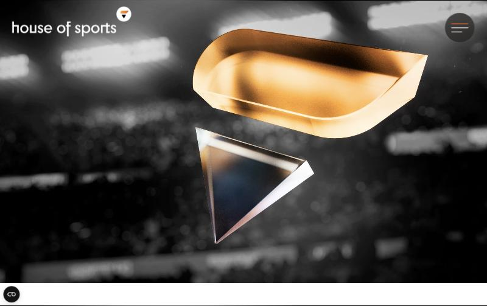
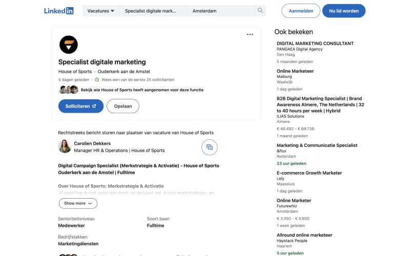
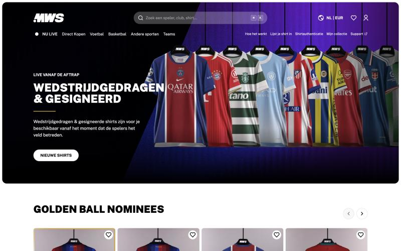
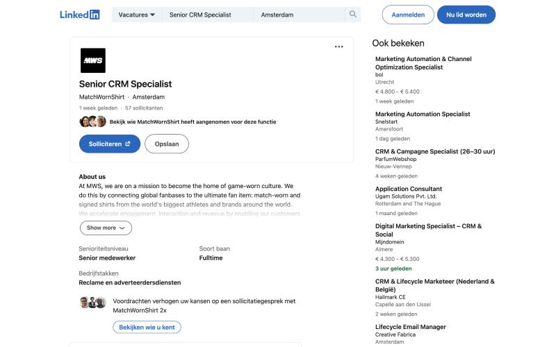
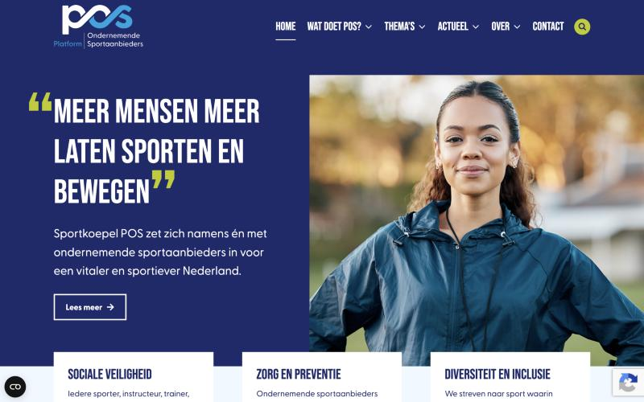
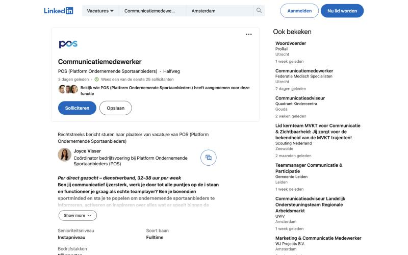

Passie voor sport, campagnes en content maken, en meten wat het oplevert. In alle drie werk je samen met partners: merken, clubs of beleidsmakers.
Het doel: merken laten scoren (bureau), omzet halen uit fans (scale-up) of meer mensen laten sporten (koepel). Ook het niveau verschilt: van instap bij POS tot senior bij MatchWornShirt.


Soort organisatie: fullservice sportmarketingbureau dat merken en sportorganisaties helpt met sponsoring en activatie.
Presentatie: donker, cinematisch en premium: een stadion op de achtergrond, weinig tekst, het werk staat centraal.
Tone of voice: energiek en speels ("Ready, Set, Go!", "datafreak", "fluitend op kantoor").


Soort organisatie: internationale scale-up en marktleider in wedstrijdgedragen shirts, met meer dan 400 partners zoals clubs.
Presentatie: donker paars met shirts van topclubs en live veilingen "vanaf de aftrap": commercieel en gericht op de fan.
Tone of voice: Engelstalig en ambitieus ("conquer the international football world").


Soort organisatie: koepel van ondernemende sportaanbieders, zoals fitnesscentra en padelaanbieders, die hun belangen behartigt bij beleid.
Presentatie: blauw en groen, met de boodschap "meer mensen meer laten sporten en bewegen": maatschappelijk en betrouwbaar.
Tone of voice: zakelijk en informatief.
Alle drie vragen ze 2 tot 5 jaar ervaring met data en meten. Mijn passie voor voetbal is een begin, maar wat me onderscheidt, is laten zien wat marketing oplevert.
Ik zoek een stage aan de commerciële kant van het voetbal, bij een club, sportmarketingbureau of voetbalbedrijf, waar ik met partners en fans werk en leer meten wat marketing oplevert. Een rol die puur beleidsmatig of puur technisch is, past minder bij mij.